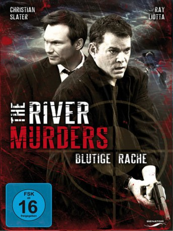

#9906 The River Murders - Blutige Rache
Alternativ: The River Murders
 
 IMDB-Wertung: 5.2 / 10
IMDB-Wertung: 5.2 / 10  Metascore: 0
Metascore: 0 
Der erfahrene Detective Jack Verdon ist ein Frauenheld. Er ist der typische Junggesellen-Playboy, der seit Jahrzehnten Single ist und das Leben genießt. Als er einen neuen Fall bekommt, realisiert er, dass ein Zusammenhang zwischen seiner sexuellen Vergangenheit und den Morden besteht. Ein Serienmörder tötet scheinbar gezielt Frauen mit denen Verdon in der Vergangenheit Sex gehabt hat. Ihm wird der Fall von dem jungen aufstrebenden FBI-Agenten Vokovich abgenommen und von seinem Vorgesetzten auf unbestimmte Zeit suspendiert. Schließlich rückt er selbst in den Blick des Ermittlers und wird zum Hauptverdächtigen, obwohl er teilweise Alibis vorweisen kann. Um seinen Namen reinzuwaschen und seine Existenz nicht zu verlieren, ist er gezwungen, sich mit seiner Vergangenheit zu konfrontieren und den Killer auf eigene Faust außerhalb des Gesetzes zu jagen.
Jahr: 2011
Dauer: 92 Minuten
FSK: 16
Land: USA Studio: SPETonspuren: DTS-HD - ,
Untertitel:
Auflösung: 1080p (1920x1080) Größe: 5826 MB
Genre: Thriller, Krimi, Mystery
Regisseur: Rich Cowan
Drehbuch: Steve Anderson
Soundtrack: Pinar Toprak
Darsteller:
 Ray Liotta als Jack Verdon
Ray Liotta als Jack Verdon Christian Slater als Agent Vuckovitch
Christian Slater als Agent Vuckovitch Ving Rhames als Captain Langley
Ving Rhames als Captain Langley- Sarah Ann Schultz als Jenny Thames
- Michael Rodrick als John Lee
 Melora Walters als Agent Glover
Melora Walters als Agent Glover- Chris LeBlanc als Detective Soter
 Raymond J. Barry als Trent Verdon
Raymond J. Barry als Trent Verdon- Wes Deitrick als Sully
- Cindy Dolenc als Annie Locke
- Alex Donnolo als Young Jack - age 19
 Tony Doupe als Lynch
Tony Doupe als Lynch- Aaron Farb als Michael Richards
 Kent Kimball als Detective
Kent Kimball als Detective Michelle Krusiec als Sung Li
Michelle Krusiec als Sung Li- Robert Sean Parker als Cemetery Worker
- Patrick Treadway als Father Harlan
- Kenny Parks Jr. als Cafe Patron (uncredited)
- Gisele Fraga als Ana Verdon
- Serena Caryl als Rebecca
- Trent A. Chastain als Jack's newborn son
- C.R. Clatworthy als Thomas Lincoln
- Kelly B. Eviston als Coroner
- Rachel Handler als Body double
- Nike Imoru als Sarah Parker
- Dominic Salvatore als Young Jack Verdon
- Sali Sayler als Lisa Lincoln
- Adrienne Thommes als Murder Victim
- Vanessa Toll als Ellie Nelson
- Scott Alan Berk als Cop #2 (uncredited)
- Trey Donner als Coroner's Assistant (uncredited)
- Aaron A. Fink als Creep in Market (uncredited)
- Aaron Kimling als Police Officer (uncredited)
Datei: X:\2011(N-Z)\River Murders - Blutige Rache, The (2011, FSK16, 1920x1080).mkv seit 08.11.2018
Festplatte: HD 2011(G-Z)
 Es gibt insgesamt 132 Filme in der Gruppe '2011(N-Z)'
Es gibt insgesamt 132 Filme in der Gruppe '2011(N-Z)'